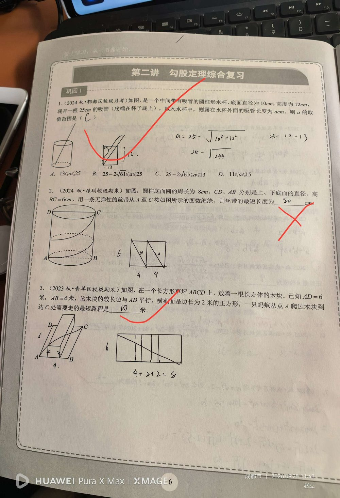

① 圆柱底面周长 = 8 cm；② AB 为下底面直径，CD 为上底面直径；③ 圆柱高 BC = 6 cm；④ 丝带从 A 绕到 C，圈数按图（图中为绕行路径）。
求丝带的最短长度。（若琳答 20 cm，被红笔判错）
【展开法（化曲面为平面）】 ① 把圆柱侧面沿一条母线剪开摊平，得到一个矩形：宽 = 底面周长，高 = 圆柱的高； ② 若丝带绕 n 圈，则展开后矩形的总宽度为 8n（每绕一圈横向推进一个周长），高度为 6； ③ 丝带的路径在展开图上就是一条斜线段 ⇒ 最短长度 = √((8n)² + 6²)； ④ 由图数出实际圈数 n 后代入即得（具体 n 以原图为准 —— 请对照书本核对圈数后填入最终答案）。 【若琳的思路（错在哪）】 她先算 √(8² + 6²) = 10，然后乘 2 得 20。用「先算一圈的斜边、再乘圈数」的做法是错的：多圈时展开后的横向总宽要一次算进同一个直角三角形里（√((8n)² + 6²)），而不是把单圈斜边简单相加。另外她手写时把底面「周长 8」与「半径 4」混在一起用，也是常见的混淆点。
① 把「底面周长 8 cm」当成半径（应该是周长，半径 = 8/(2π)）； ② 多圈缠绕时「先算一圈斜边再乘圈数」（错！必须把总横向距离 8n 一次代入同一勾股式）； ③ 剪开位置选错，导致展开图上起点与终点的横向差弄错； ④ 忘记「无弹性丝带最短」= 展开图上的「线段」（两点之间线段最短）。
① 圆柱侧面展开图（矩形：宽 = 底面周长，高 = 圆柱高）； ② 空间曲面上的最短路径 ⇔ 展开图上的线段； ③ 勾股定理 √(a² + b²)； ④ 多圈缠绕的处理：横向总距离 = 周长 × 圈数。 📌 出处：第二讲 勾股定理综合复习（巩固1）第 2 题；若琳答 20 cm 被红笔判错。教材答案需对照原书确认（取决于圈数）。